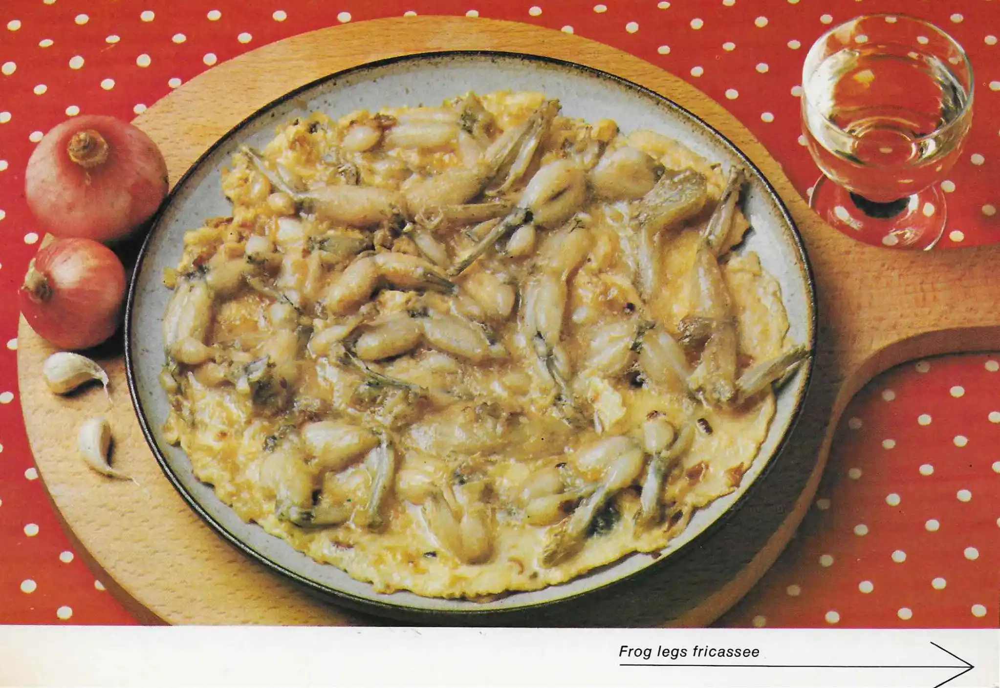

Frog Legs Fricassee

Description
Vintage French frog legs stew made with garlic and onions in butter. You
will be surprised that they taste like chicken!
Ingredients
- 2 cloves of garlic, minced
- 2 onions, chopped
- 24 skewered frog legs
- 3½ tablespoon butter
- 2 eggs
- 1 tablespoon vinegar
Steps
-
Remove the frog legs from the skewers; cut off the toes with scissors.
-
Lightly brown the garlic and onions in the butter. Add the frog legs and
sauté rapidly, turning them over. Lower the heat and cook 25 minutes.
-
Pour the eggs, slightly beaten, over the cooked frog legs. Let them set.
-
Remove to a serving dish. Pour the vinegar in the hot pan, bring to a
boil and pour over the frog legs.
Back to Main Menu